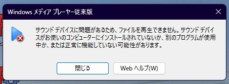

イヤホンジャックのエラーに遭遇
windows11 24H2 / 原因不明
概要
ある日、主がいつものようにイヤホンを挿入して使用しようとしたところ
音が出ない
。
ちなみに
内蔵スピーカーに切り替えるとちゃんと音が出る。
別のイヤホンに変えても状況は変わらず。つまりイヤホンが壊れているわけではなさそう。
PC内にあった適当な音源をイヤホン再生してみようとするとこんな警告が。たまげたなぁ...

何度再生しようとしてもこの警告が。一体原因は何なんだ
いろいろ試してみる
衝撃の結末
湯豆腐のかたまり──Assemble Yudofu
 湯豆腐のかたまり──Assemble Yudofu
湯豆腐のかたまり──Assemble Yudofu